Education: Bachelor’s in Computer Science, Master’s in AI & Machine Learning. Expertise in AI systems, microcontrollers, TinyML, and applied ML.
Experience: 3 years as Computer Science Teacher & Lab Assistant; integrating Canva and Zoom into teaching.
Motivation: Inspired by my mother’s dedication; aim to provide students with encouragement, guidance, and curiosity-driven learning.
Gibbs’ Reflective Cycle: Description → Feelings → Evaluation → Analysis → Conclusion → Action Plan
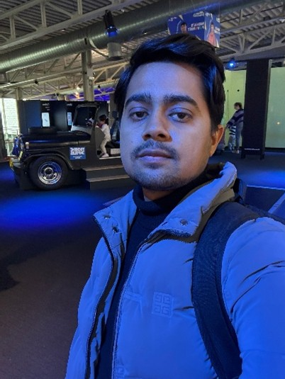
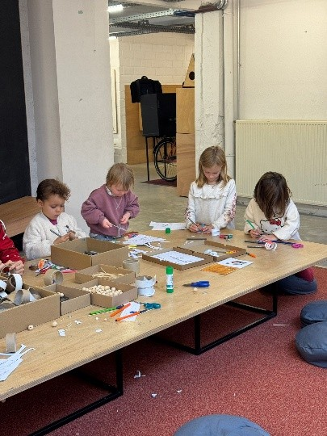
Influenced by international models and classical philosophy:
Students experiment first (ESP32, sensors), then learn theory. Understanding through doing.
Pair programming, scaffolded coding, gradual removal of support to maximize growth.
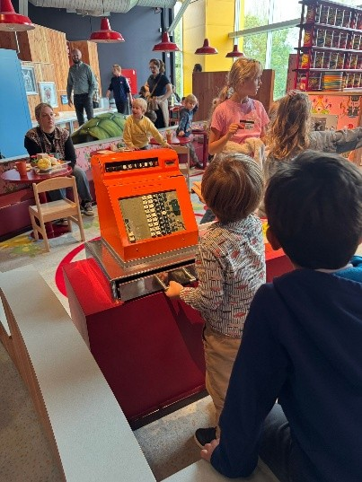
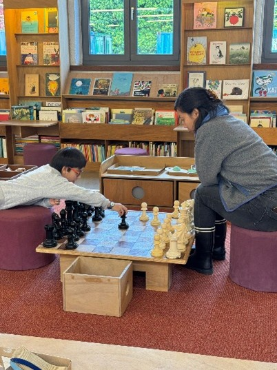
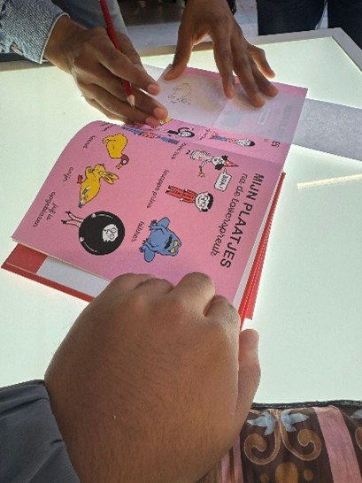
Inspiring International Pedagogy
Research & Reflection
International Pedagogical Influences
As an AI and Computer Science educator, I believe effective pedagogy must be globally informed. Through research and observation, three international models strongly influence my approach:
Finnish Education Model – Student Autonomy & Trust
Finland depends on:
• Teacher autonomy
• Minimal standardized testing
• Student well-being
• Phenomenon-based learning
Reflection:
This model reinforces my belief that curiosity drives deeper learning than pressure. In my AI classes, instead of over-testing students, I integrate project-based assessment. For example, students design real-world AI solutions rather than memorizing definitions.
2. Singapore STEM Model – Structured Excellence
Singapore balances:
• High academic rigor
• Clear scaffolding
• Strong STEM emphasis
This aligns with Cognitive Load Theory, ensuring complexity is introduced gradually.
Reflection:
AI and microchip education can overwhelm learners. Inspired by Singapore’s structured approach, I scaffold content:
Week 1–2: Sensors & data basics
Week 3–4: Data preprocessing
Week 5–6: ML model training
Week 7–8: Deployment on microcontrollers
This prevents overload while maintaining high standards.
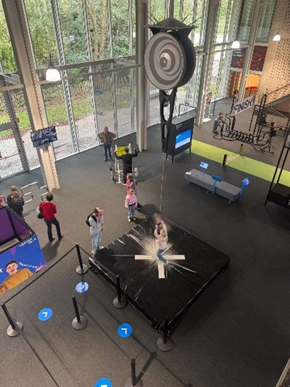
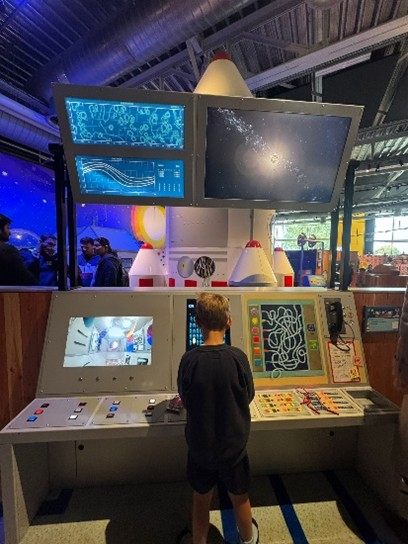
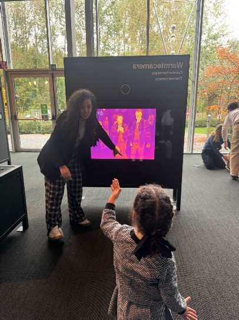
Observed hands-on labs and group discussions; replaced 30% of lectures with active learning. Gamified and art-integrated approaches were highly effective.
Children learned the periodic table and planetary science through interactive digital games. Observed integration of art & craft into science learning.
Interactive exhibits, storytelling, and multimedia enhanced historical understanding. Learning outcome: teach students to collect and concisely organize data.
Hands-on workshops, collaborative projects, and robotics demonstrations inspired creativity and engagement. Emphasized fun + learning for all ages.
Observed historical exhibits including WWII displays; outdoor rooftop view for urban context. Inspired reflection on presenting complex topics effectively.
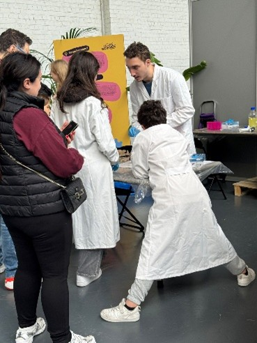
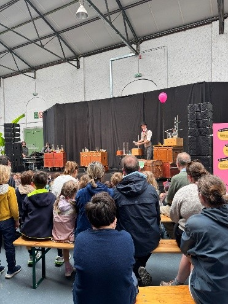
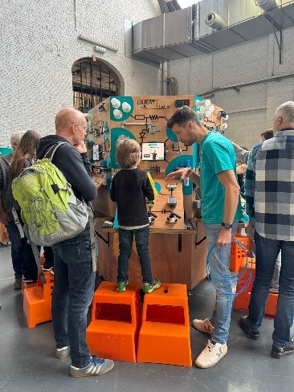
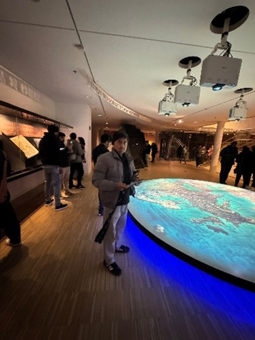
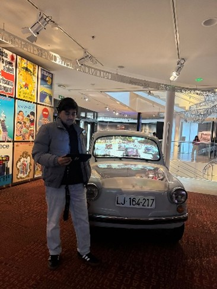
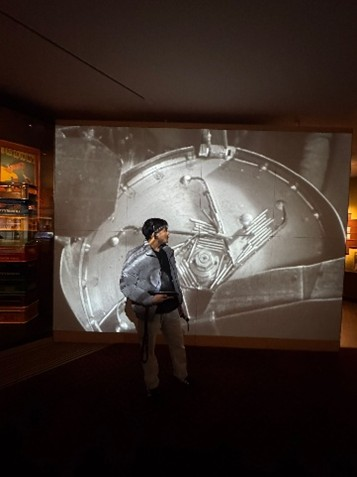
Dear Selection Committee,
As a Computer Science and Artificial Intelligence educator, I am deeply committed to developing innovative, inclusive, and globally responsible learning environments.
My academic background in Computer Science and AI, combined with three years of teaching experience, has allowed me to integrate emerging technologies into meaningful educational experiences. However, I believe that effective teaching extends beyond technical expertise. It requires intercultural awareness, emotional intelligence, and a reflective mindset.
International education represents an opportunity to expand my pedagogical perspective.
I am particularly drawn to institutions that emphasize inquiry-based learning, intercultural dialogue, and ethical responsibility. These values align strongly with my own philosophy of education: that knowledge should empower students to contribute positively to society.
My goal is to design AI and technology curricula that are globally relevant, socially responsible, and accessible to diverse learners. I aim to contribute actively to collaborative teaching communities, exchange innovative practices, and learn from multicultural perspectives.
I am motivated not only to teach but also to grow.
I believe this opportunity will enhance my ability to create inclusive classrooms where students feel valued, challenged, and inspired.
Thank you for considering my application.
Sincerely,
Muhammad Hamza